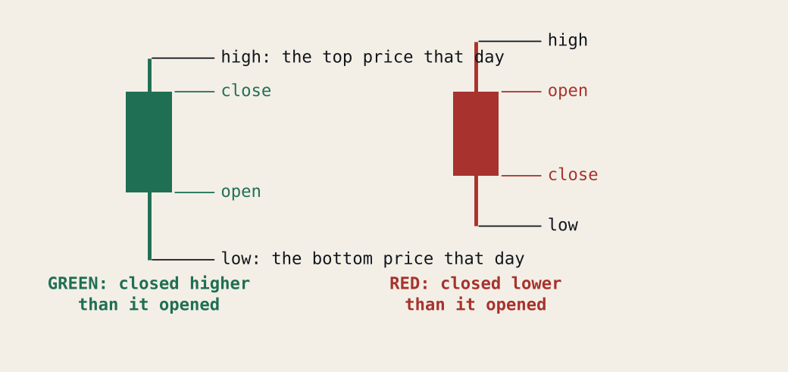
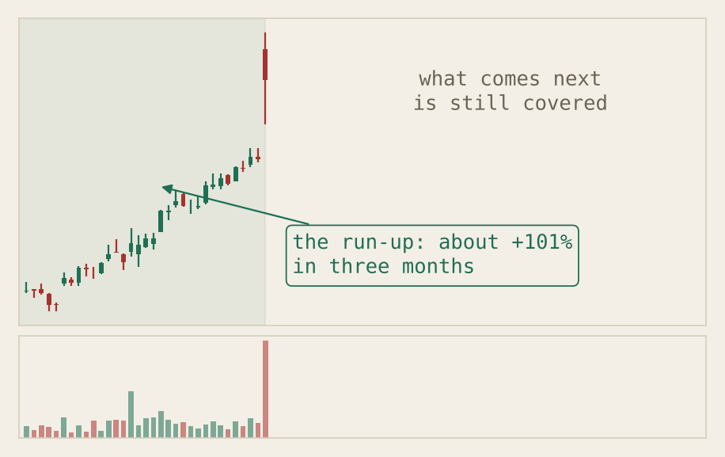
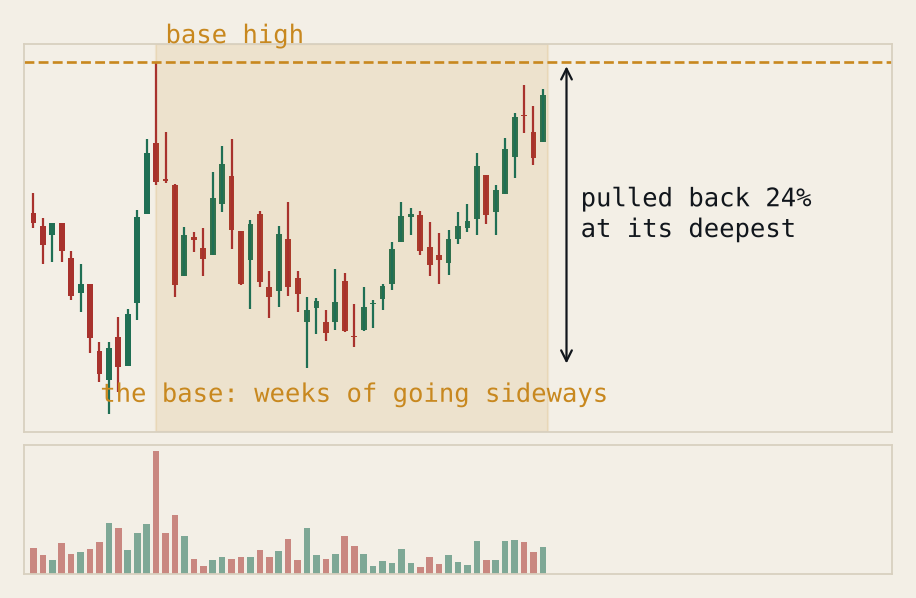
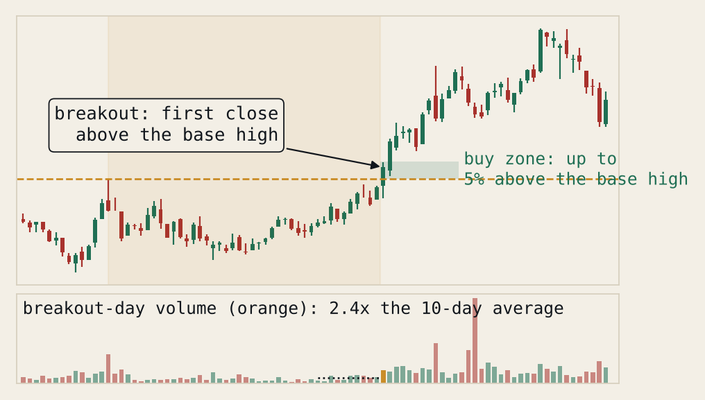
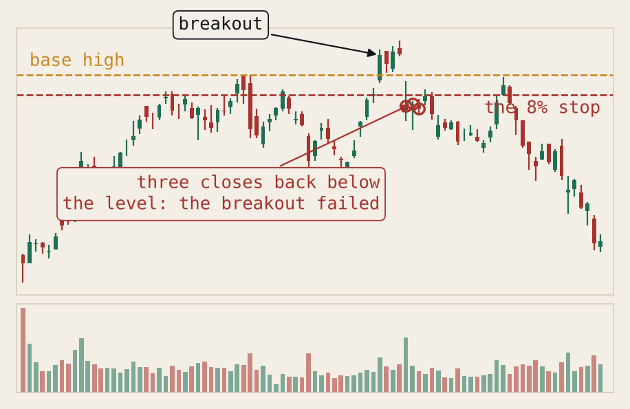
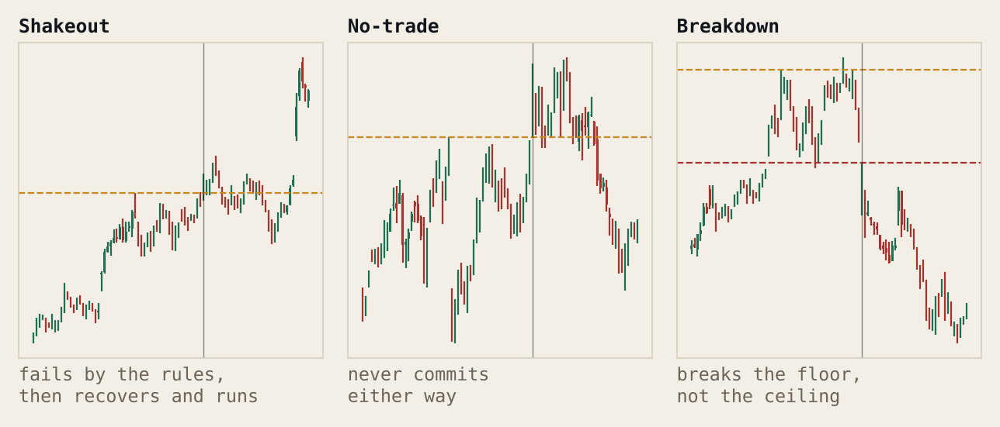
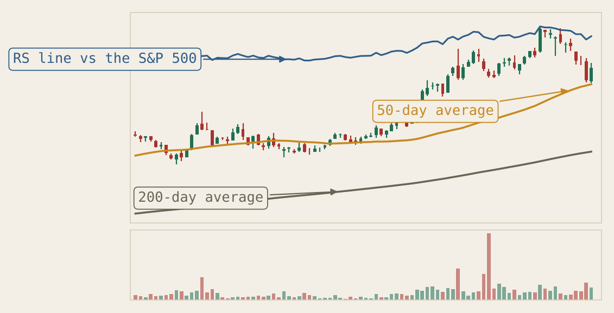

BREAKOUT asks you to read a chart the way breakout traders do. This page covers what you need to know to play well, in plain language, with real charts from the game.
The approach comes from William O'Neil, who studied decades of the market's biggest winners and found that most of them followed the same pattern before their big moves: a strong run-up, a pause, then a breakout on heavy volume. You don't need to know any of that to start. Read this once, play a few practice charts, and come back when something doesn't make sense.
Every chart in BREAKOUT is a daily chart. Each candle is one trading day, and a chart holds about four months of them.
A candle shows four prices. The thick body runs between where the stock opened and where it closed. The thin lines, called wicks, reach up to the day's high and down to the day's low. Green means the stock closed higher than it opened. Red means it closed lower.

Under the candles are volume bars: how many shares changed hands that day. Volume is how you tell a move that matters from one that doesn't. A big move on light volume is a few people pushing. A big move on heavy volume is a crowd, often big institutions, and those are the buyers who can carry a stock for months.
Breakout traders don't go looking for bargains. They look for stocks that are already strong. Before a good setup, the stock has usually climbed a long way, often 30% or more in a few months.
That run-up is why every BREAKOUT chart opens with the stock already rising. It isn't a hint that the chart will go up from there. It's the context a trader needs: this stock has buyers. The question is whether they'll keep coming.

After a big run, strong stocks rest. They go sideways for a few weeks while early buyers take profits and new buyers step in. That sideways stretch is called a base.
The top of the base, usually a peak on its left side, is the base high. It's the price the stock has to get back above. You'll see it as a dashed orange line when a chart is revealed.
Good bases share a few traits. They don't drop too deep: the pullback from the base high is usually 10 to 35%. They last a few weeks, not a few days. And on the right side, the daily swings get smaller and the price creeps back up toward the high. That tightening means the sellers are running out.

The breakout is the first day the stock closes above the base high. Not just pokes above it during the day. Closes above it.
Volume is the tell. On a real breakout, a lot of shares trade, well above normal. In BREAKOUT, "strong" means at least 1.4 times the average of the previous 10 days. Light volume doesn't mean a breakout will fail. It means fewer big buyers have committed, so the odds are worse.
Traders buy at the breakout or soon after, but not too late. The usual rule is to buy no more than 5% above the base high. Past that, you're chasing, and a normal pullback can knock you out.

Many breakouts don't work, often close to half. That's normal, and it's why the exit matters as much as the entry.
There are two ways to know you're wrong. The first is the stop: if a stock closes 8% or more below what you paid, you sell. No waiting, no hoping. A small loss is the cost of playing good setups. A big loss is what ends a trading account. The second is the level itself: in BREAKOUT, if a stock closes back below the base high three days in a row within 15 trading days of breaking out, the breakout has failed.
Winners have a rule too. The usual move is to take profits at 20 to 25%. The exception: a stock that gains 20% within three weeks of breaking out is showing real power, so traders hold it for eight weeks before deciding.

Some charts look like setups and aren't. Part of the game, and part of trading, is knowing when to stay out. Passing on a bad setup earns an A.
Shakeout. The breakout fails by the rules, then the stock turns around and runs anyway. It's frustrating, but cutting it was still right when it happened. A failed breakout that fixes itself is a reason to watch for a new entry, not a reason to skip the exit next time.
No-trade. The stock pokes above the base high and then just sits there, never committing either way. Nothing worth trading happened. Sitting out, or getting out flat, is the good read.
Breakdown. The stock builds what looks like a base, then falls out of the bottom instead of the top. It closes below the base's low, called the floor, and keeps sliding. There was never a breakout to buy. If you bought early, inside the base, this is where you get out.

Indicators are on by default in BREAKOUT. They add context without giving away the answer.
Moving averages. The orange line is the 50-day average closing price and the gray line is the 200-day. A healthy stock trades above a rising 50-day. A stock below its 200-day is usually in trouble.
The RS line. The blue line compares the stock with the S&P 500. When it rises, the stock is beating the market. When it hits a new high, especially before or during a breakout, that's one of the strongest signs there is.
Market direction. Most stocks follow the market. "Uptrend" is the time to buy breakouts. "Under pressure" is a time for caution. In a "correction," most breakouts fail, so the best move is usually to wait. In the game, the rules trader won't buy a breakout during a correction, and passing on one earns an A. The market label shows the status on the day you're looking at, so check it on the breakout day, not just at the end.
Earnings. The briefing shows earnings per share against the same quarter a year earlier, and growth over recent years. The biggest winners usually show quarterly earnings up 25% or more, and accelerating. Earnings update as new reports come out during the chart.

BREAKOUT is a game for learning to read charts. It isn't a case for trading instead of investing.
After every chart, the game shows what the S&P 500 did over the same days, and you'll notice it's a tough opponent. Over long stretches, most professional fund managers fail to beat it. Studies of individual traders find most of them do worse than if they had simply held an index fund. Trading well takes time, discipline and money you can afford to lose.
For most people, a low-cost index fund held for years is the better plan for real money. Play BREAKOUT for the fun of reading the chart, and to understand what the traders on the other side are looking at.